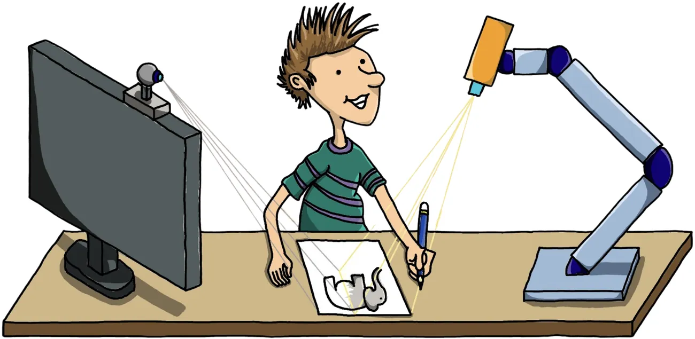
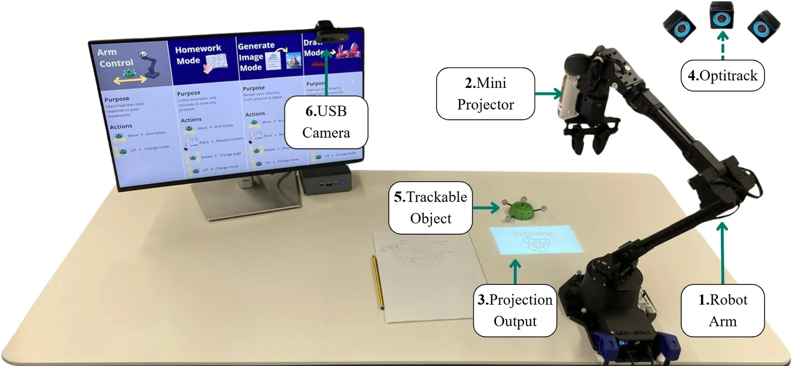
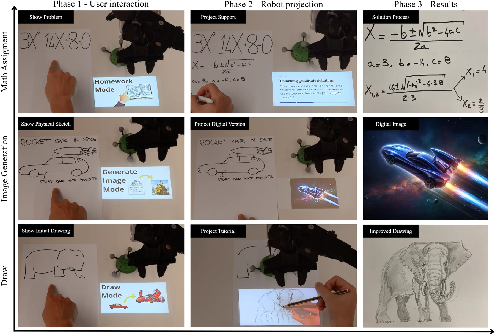

01 CyPhy Life · 2025 - present
AIfred
A robot arm that projects AI help onto your desk

Abstract— Desk-based learning and creative activities benefit from handwritten engagement. However, current generative AI tools deliver guidance through a separate screen, creating a gap between where users think and where assistance appears. To address this, in this work we design AIfred, a desk-based robotic arm with a projector mounted at the end-effector that places AI-generated guidance alongside handwritten work. AIfred combines workspace perception, context-aware content generation, and robot-mediated projection to support math- assignments, image-generation, and drawing tasks. In a user study (n = 36), we compared AIfred against ChatGPT (GPT-5.6 Luna) running on a laptop. Both tools performed comparably while assistance was available during math assignment (6.7 vs. 7.3/10, p = .41), but AIfred improved short-term learning transfer by 60% once assistance was withdrawn (7.0 vs. 4.4/10, p = .003). In addition, independent art and design professors ranked drawings produced with AIfred better in 33 of 36 cases. Our findings indicate that spatially co-located AI assistance benefits tasks whose guidance shares a spatial frame with the work.
Submitted to ICRA 2027, under review.


The study compares two whole systems, not single design features. Embodiment, projection and the style of the guidance.